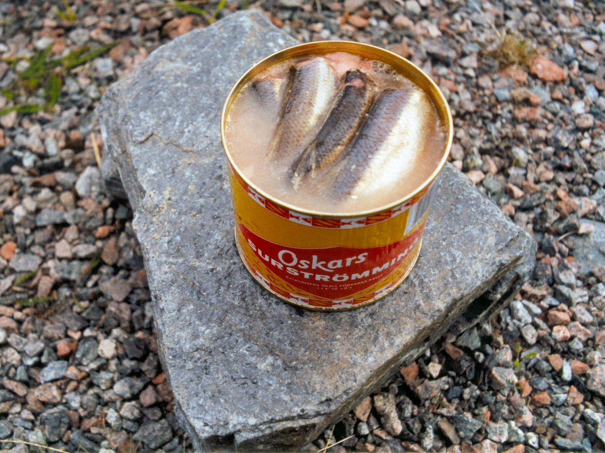
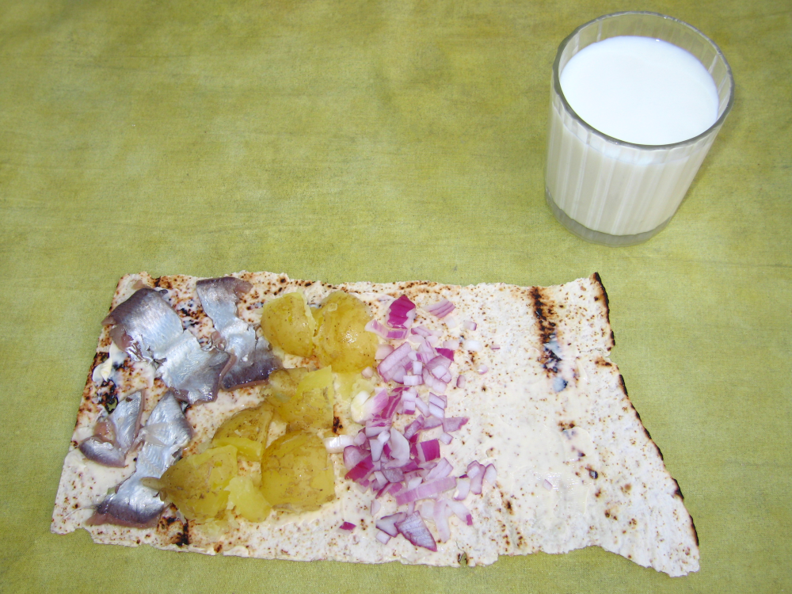

Descripción
El surströmming es un arenque conservado mediante fermentación. El pescado, previamente lavado, se sala, se coloca en cubas abiertas y se deja fermentar. Luego, el caldo experimenta una autólisis, es decir, se descompone por acción de sus propias enzimas. Junto con las bacterias, se forman ácidos con un olor fuerte, como el ácido propanoico, el ácido butírico y el ácido acético, a partir de los azúcares simples del pescado. También se genera sulfuro de hidrógeno. Después, el surströmming se coloca en latas para continuar su proceso de fermentación. El surströmming es una especialidad sueca, principalmente del norte, que se produce a escala industrial en Höga Kusten, Ångermanland.
História
La fermentación de alimentos es un método de conservación muy antiguo que existe desde hace milenios. La planta de fermentación de pescado más antigua conocida se encontraba hace unos 9.000 años en el sur de Suecia, en Norje Sunnansund. Entre otras cosas, en el Imperio Romano se producía industrialmente pescado encurtido, el garum. El surströmming es probablemente un plato con orígenes muy antiguos, pero el método de conservación no se volvió común en Suecia hasta el siglo XVI, cuando surgió la escasez de sal debido a la guerra del rey Gustav Vasa. En ese momento, se empezó a salar el pescado con menos sal de lo habitual. Se debate si este procedimiento fue resultado de un conocimiento previo sobre la conservación del pescado en escabeche o si el descubrimiento del efecto conservante fue una coincidencia. Este método de conservación, con su larga vida útil, es una explicación de por qué el surströmming, junto con la sopa de guisantes, se convirtió en un alimento clásico en el ejército. Los pescados grasos como el salmón, la trucha, la cucaracha, la carpa, el arenque, el tiburón y el pez roca son otros ejemplos de pescados que se han conservado de esta manera en todo el mundo, o que todavía se conservan localmente de esta forma. Lo que hoy se conoce como "salmón curado" probablemente era originalmente un plato más ácido, parecido al surströmming. En Noruega, el pescado conservado mediante fermentación se llama rakfisk (del nórdico antiguo raka - húmedo), y en fuentes noruegas este término aparece ya en 1348.

Producción y ventas
La producción de surströmming se centra en Höga Kusten, pero también se lleva a cabo a lo largo de toda la costa norte de Suecia, desde Hästskär en Norra Uppland hasta Kalix en el norte, generalmente en pequeñas empresas familiares en pueblos pesqueros. En 2009, el 49% de la producción se vendió al norte de Dalälven/Gävle y el 51% al sur. El mercado individual más grande es el área de Estocolmo. Otros grandes mercados son la costa de Norrland, Dalarna y Jämtland.
Tradicionalmente, el surströmming no se vende hasta su estreno, que tiene lugar el tercer jueves de agosto. Hasta 1998, el estreno del surströmming estaba regulado por ley, ya que las autoridades querían asegurarse de que el pescado comercializado estuviera realmente lo suficientemente maduro. Hoy en día, sin embargo, la tradición la mantienen únicamente los fabricantes.

Consumo
El surströmming tiene un olor muy fuerte y un sabor salado. Una forma tradicional de comer surströmming es en el llamado klämma. Se puede hacer un sándwich utilizando dos trozos de pan plano duro untados con mantequilla, de tamaño similar, con papas hervidas con piel, finamente picadas y con un toque ácido, que se colocan en el medio. Luego, se "exprimen" en una especie de sándwich doble grande que se come con las manos. También se puede hacer un klämma con pan plano y blando, que a veces se llama stut, donde los ingredientes se enrollan en el pan. Otros acompañamientos que se han vuelto comunes en los últimos tiempos, especialmente en el sur de Suecia, son la cebolla amarilla cruda o frita en mantequilla, o la cebolla morada cruda. También se pueden encontrar mantequilla, crema agria y, a veces, tomate y eneldo.
Las bebidas habituales para acompañar el surströmming son la cerveza y el aguardiente, pero también se pueden consumir mosto, refrescos o leche. Dado que los ácidos responsables del olor del surströmming son solubles en grasa, los alimentos grasos, como la mantequilla, que entran en contacto con el olor del pescado, pueden adquirir su sabor.
